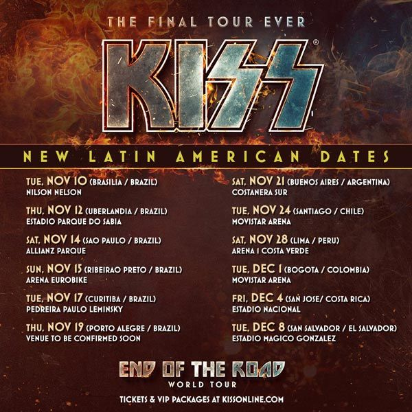

conciertos 2022-gira por sudamérica:
ya todos sabemos, el día de hoy comienza la gira de despedida de Kiss, legendaria agrupación de Rock que ha revolucionado la historia de la música decenas de veces, ya sea con el maquillaje, los increíbles escenarios donde se presentan, las canciones que han publicado o incluso toda la industria de merch que fundaron. La agrupación estará pasando por distintos países de la región, entre ellos podemos encontrar a Chile, Argentina, Brasil, Perú y Colombia. Gene Simmons habría declarado que ya estarían planeando organizar una fecha más en México para despedirse de su público mexicano. Recordemos que la agrupación ya había dicho «adiós» durante el 2019.
